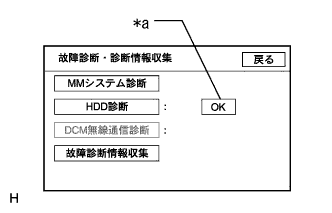

DTC B15B8 Hard Disk Malfunction |
| DTC.No. | Diagnosis Description | Inspection Area |
|---|---|---|
| B15B8 |
| Navigation Receiver Assembly |
)| Step 1 | Perform HDD Diagnosis |
Start Diagnosis
Start diagnosis and display the service inspection menu screen. (see)
Select "Diagnosis/Diagnostic Information Collection" on the service inspection menu screen to display the diagnosis/diagnostic information collection screen.
 |
HDD Diagnosis
Perform HDD diagnosis.
| *a | Diagnosis Result |
|
| ||||
| OK | |
| Step 2 | Clear DTC |
Using SST (TaSCAN), read the DTCs following the screen. (see)
Select "Clear" on the screen display and clear the DTCs following the screen.
Turn IG OFF.
| NEXT | |
| Step 3 | Recheck DTC |
Using SST (TaSCAN), check the DTCs again and proceed to the destination below. (see)
| Result | Proceed to |
|---|---|
| Code output | A |
| No code output | B |
|
| ||||
| A | ||
| ||